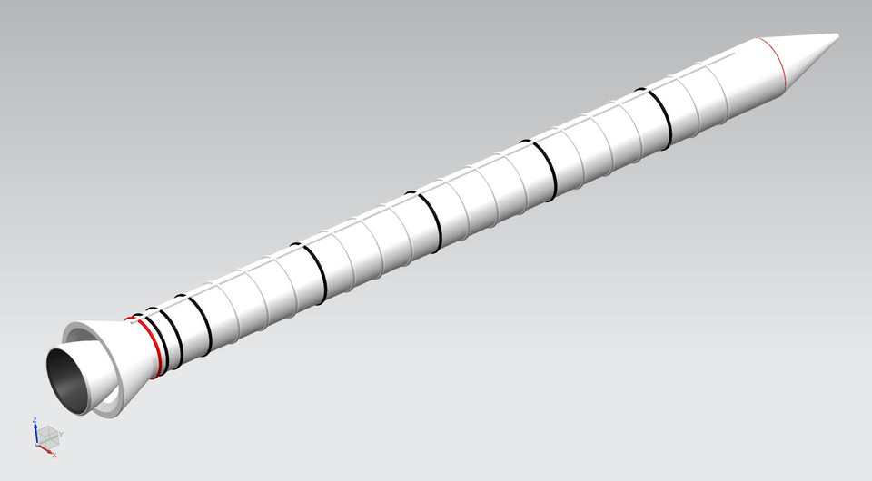
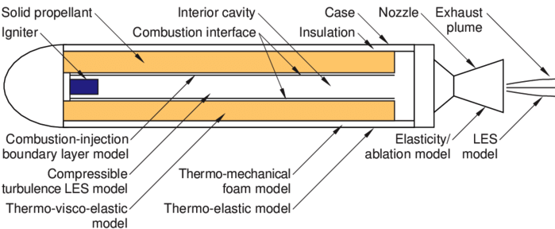

Een SRB, ofwel Solid Rocket Booster, is een raketmotor aangedreven met een vaste stof als brandstof. Ze worden meestal gebruikt als
hulpraketten bij het opstijgen van het lanceerplatform. Voorbeelden hiervan zijn de Space Shuttle, de Ariane V en de Atlas V.
Voordelen van SRB's zijn:
- Veel meer stuwkracht dan gewone raketmotoren
- Eenvoudig ontwerp
- Ze zijn goedkoper om te maken
Nadelen van SRB's zijn:
- Zodra geactiveerd is ergeen manier om ze te stoppen totdat ze op zijn
- Fouten zijn meestal onopgemerkt maar catastrofaal
- Ze hebben een houdbaarheid datum
placeholder 